Overview
This tutorial will guide you through the basics of editing with the Mannequin Editor. We'll be opening the editor and a setup file called a "preview setup". Then we'll be creating & editing fragments, and finally we'll look at how to save the changes.
It uses samples that are part of the SDK. Feel free to follow along with the step by step instructions.
The tutorial will use a lot of pictures and a simple color code to distinguish areas to interact with and areas to look at:

Opening the Editor
Open up the Mannequin Editor by clicking on the Mannequin icon on the toolbar:
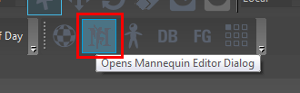
You can also open the Mannequin Editor from the menu item View -> Open View Pane -> Mannequin Editor.
Loading the Preview Setup File
In order to work in the Mannequin Editor, we need to load what we call a "preview setup file". This file is not used by the game, but it tells the editor which characters and which mannequin animations to load. When you opened up the mannequin editor it opened the SDK's first-person character preview file by default. For these tutorials we will use other, simpler preview files.
Load up the preview file for the first tutorial, called "sdk_tutorial1preview.xml"
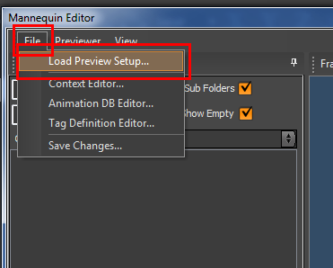
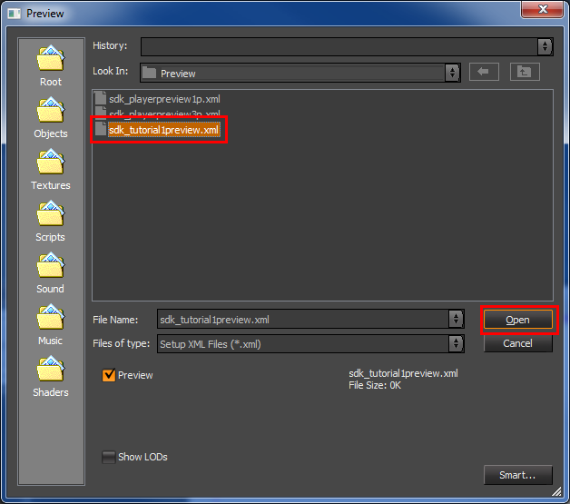
The preview file sets up a character similar to how the game does it, but now the character is fully inside this editor.
This is how the editor will look now, though you might need to resize the window a bit to make it fit the image below:
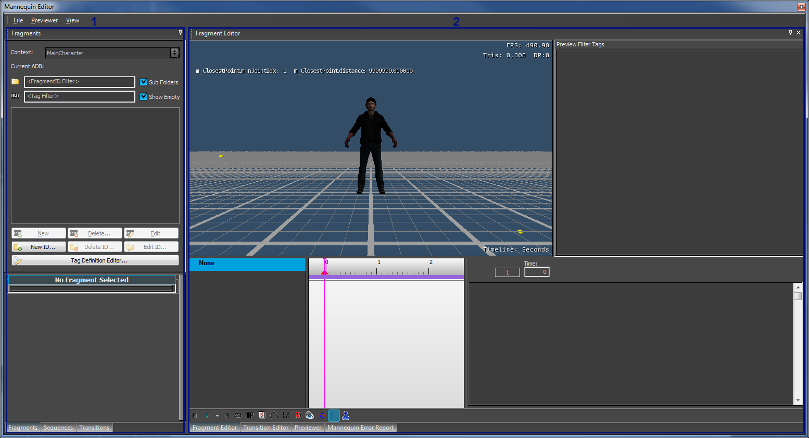
Notice there are two main areas in the editor:
- 1 - Left area: This can show either Fragments, Sequences or Transitions. Click on the tabs at the bottom of this area to show those different panels. We will explain later what they mean.
- 2 - Right area: This can show either the Fragment Editor, the Transition Editor, Previewer or the Error Report panel. Again, you can already click through these to get a feeling for how they look. And again, we will explain later what they are for.
You can configure the default Preview File that is opened when you open the Mannequin Editor in Edit -> Preferences -> Mannequin -> General -> Default Preview File in the general UI of the Editor.
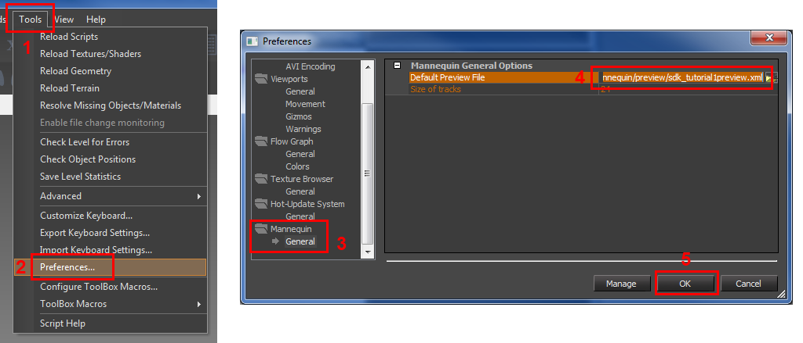
Creating and Editing FragmentIDs
When the game wants to play an animation it will never request the animation file directly. The game will always request it through another name which we call a FragmentID. In this tutorial we start the setup from scratch so no FragmentIDs have been set up yet. Let's create one.
- We do this in the Fragments Panel (sometimes also called the Mannequin Fragment Browser), so make sure you have this panel open by clicking the Fragments tab on the bottom left.
- Press the "New ID..." button to start creating a new FragmentID.
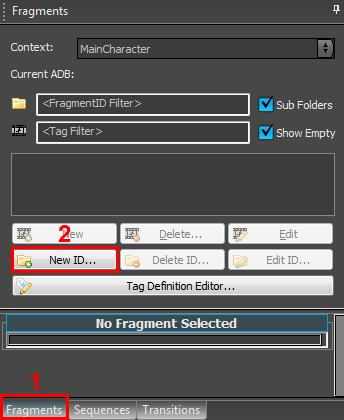
Next we need to enter a name. For this tutorial we pick the name "Idle":
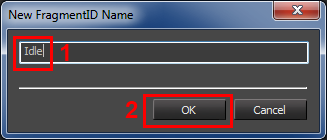
In a real production scenario there might already be lots of FragmentIDs defined and you won't need to create them yourself anymore. Your technical colleagues will inform you whether you need to create FragmentIDs yourself or not and which naming convention to use.
Now the FragmentID Editor will open up. Most of the settings are already correct in here:
Make sure "FullBody" as the default scope. (it should already be selected)
If you forget to select a scope the fragmentID will not work in the editor
Press OK:
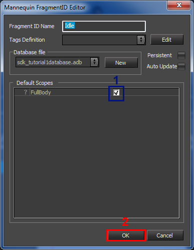
In this simple tutorial we have only one of these "scopes", but in a real example your character will likely contain many different ones. Each of these can represent a different 'part' of the mannequin character. It could be an attachment like a weapon you want to animate alongside the main skeleton. Or something more abstract like what technique to use for looking around. Which ones you need to select will depend heavily on the case and whoever set up the character will give you this information. Here is an example how this can look like from the SDK example:
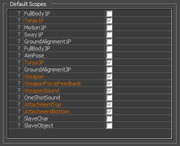
You will now notice that there is a new item in the Fragment Browser called Idle.
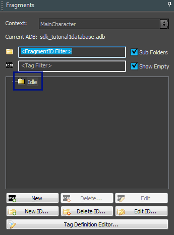
You can always access the editor you just closed again using the Edit ID... button (you can open and close it now to try it out).
And next to it is the "Delete ID..." button to delete a FragmentID (including all fragments inside it, though in this tutorial we didn't add any yet).
Creating and Editing Fragments
A FragmentID alone isn't much use if it doesn't refer to your animations somehow. And this is where Fragments come into play. A fragment is a small combination of animations that can be played back as a whole; let's create some to get a feeling for what we mean by that and how it ties into this FragmentID.
Creating a Fragment Using Drag and Drop
There are many ways to create fragments, but possibly the simplest is just dragging an animation on a FragmentID.
First let's find the animation we want to refer to in the Character Tool.
Keep the Mannequin Editor opened.
Open Character Editor by clicking the icon for it on the main toolbar:
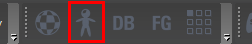
Now we look for the animation.
- Make sure you have
objects/characters/human/sdk_player/sdk_player.cdfopen (if not, open it through File/Open...). - If you want you can use the Filter to filter down the list of animations. In this example we just type 'idle'.
- Look for 'stand_tac_idle_rifle_3p_01' (in the "stand" folder, the folders here correspond to the animation name prefixes).
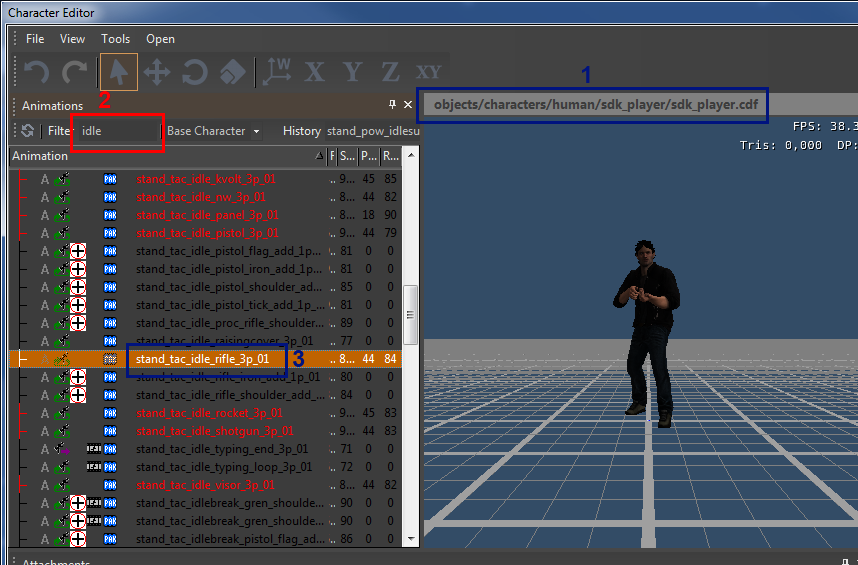
Next drag and drop this animation onto the Idle FragmentID we just created.
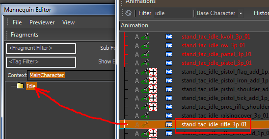
The result will be:
- We created a new fragment that shows up as 'option 1' in the Fragment Browser. The elements in the fragment browser with the movie icons in front of them are the Fragments. It is placed in the '<default>' subfolder of the FragmentID. This basically means that this fragment is the default option for this FragmentID: whenever the game requests Idle the system will play this fragment. We will create more options, more variations, later.
- The fragment is automatically opened up in one of the panels on the right side: the Mannequin Editor
- We see that there is an animlayer (animation layer) inside the FullBody scope – indeed this is the scope we selected as default scope when we created the Idle FragmentID before.
- The animation clip we dragged in is placed on the timeline for this layer.
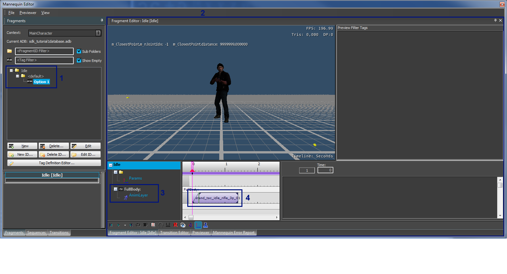
Playback Control
Here is a quick overview of how you can review the fragment's animation:
- Press here to play/pause the fragment, as well as change the playback speed by clicking on the little downwards pointing arrow.
- Scrub by dragging/moving the pink marker using the left mouse button. With the right mouse button you can define the playback range by dragging two red triangles around on the timeline.
- Press here to enable looping playback (the loop will be over the playback range you selected in 2).
- Press here to toggle the time display from seconds to frames (30 fps) and back.
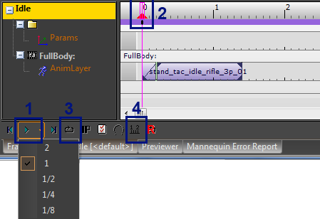
If the sequencing panel is selected (press somewhere in the light grey area) you have access to a couple of keyboard shortcuts too:
- spacebar: play/pause toggle
- left/right arrow key: next/previous tick
- home: move time back to beginning of sequence
Adding More Clips to a Fragment
Now we can make this fragment more complicated if we wanted to. For example let's drag another animation clip into the fragment:
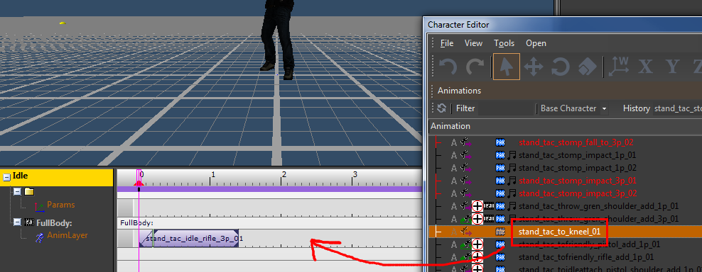
Your timeline now looks like this, and you notice the animation clip got added:
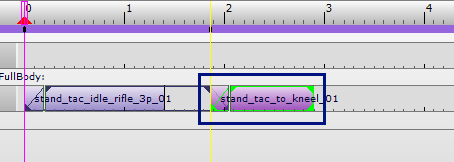
Clip Zones
You can identify the following zones on the timeline now:
- Blend-in period of the first clip (this is currently ignored and might seem useless, but it will be used when you start to sequence this fragment after another fragment).
- The period where the first clip is playing fully.
- This is after the first clip has finished, but it will repeat its last key by default.
- Blend-in period of the second clip. This is where the transition happens between the repeating last key from the first clip and the second clip.
- The period where the second clip is playing fully.
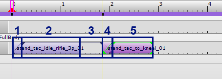
Feel free to play around and dragging these clips around on the timeline and seeing how this looks when playing back the resulting animation.
Typically you'd want the second clip to be nicely aligned to the end of the first clip so you don't see any repeating frames. You might also want to increase or decrease the blend-in time. You can do that by dragging the vertical bars marked below:
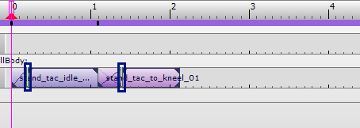
Creating a Fragment Without Drag and Drop
As remarked above this was just one of the simplest ways of adding fragments. There is also a way that doesn't use drag and drop at all which is good to know about. Let's add another fragment to try this out.
Press the New button in the Fragment Browser to add a new fragment under the currently selected FragmentID:
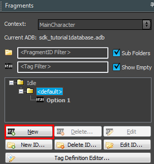
Notice that the new fragment you just created automatically became another default option for the Idle FragmentID:
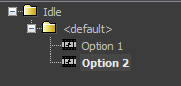
This means that whenever the game requests to play Idle, it will now randomly pick one of the two options we have.
The new fragment is also automatically selected into the Fragment Editor (it's a bit hard to see but note that the currently previewed fragment is the one in boldface; you can change the currently previewed fragment by double clicking on a fragment).
Now contrary to above this new fragment will be completely empty. It will not even have an animlayer:
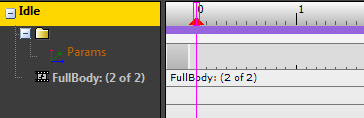
But we can now add an animlayer in the Fullbody scope manually from the right click menu:
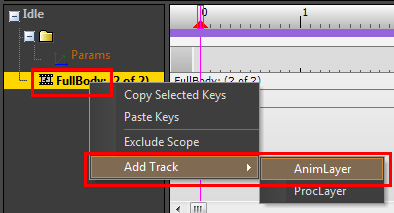
Now we have an animlayer we can add an animation clip to it by double clicking on the layer's timeline:
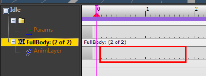
But we're not there yet, now we have a clip but it's empty, which is called a 'None' clip. To add an animation we need to have it selected and then we can set an animation in its properties to the right:
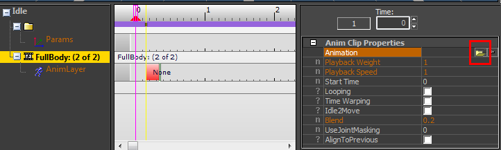
An animation browser window will open and you can now select an animation by double clicking on it:
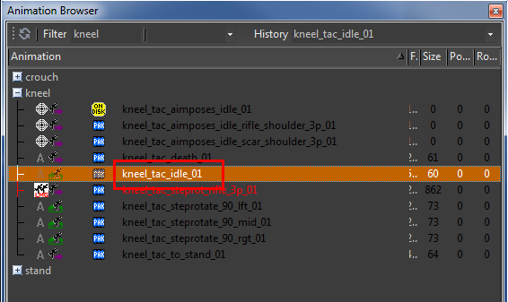
Animation Clip Properties
Now might be a good time to experiment with the other properties of animation clips. One of the most important ones is the 'looping' property. Check it to make the animation clip looping forever:
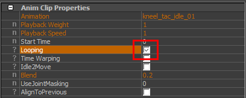
Note how the clip now takes up the whole timeline and vertical markings appear to show where the animation loops.
See Mannequin Animation Clip Properties for information on the other properties.
Adding Multiple Layers
Now we can also show how to add multiple layers of animation within one fragment. Add another layer by using the same right click menu item as before:
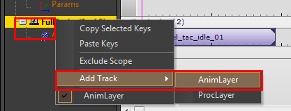
The number of layers you can add might be limited. In this case you can create 3 layers within the FullBody scope (this is configurable by the person maintaining the scopes).
In these new layers you can put additive or override animations to add extra variation on top of the base layer's animation. Try to recreate something like the following for example. Note how the 'None' on the second layer is used to stop the looping 'melee' clip:
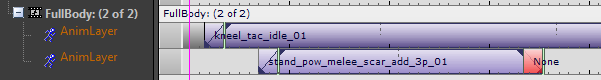
Procedural Clips
Next to animation we can also sequence 'procedural clips' in a fragment. These can do anything from control alignment or aiming to playing sound. New types can be added easily by programmers when needed.
You cannot just put those procedural clips on animlayers though; you need to create a proclayer (procedural layer) as follows:
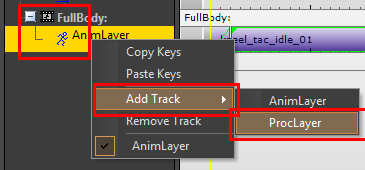
Now you can add a procedural clip to the newly created layer by double clicking (just like you did to create an animation clip above)
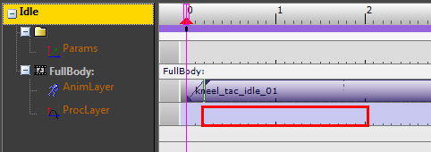
This is how this newly created "None" procedural clip looks:
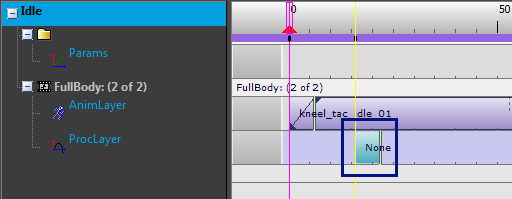
Now you can edit its properties and make it do something useful, for example play a sound:
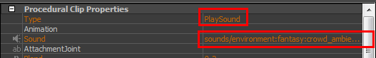
And as before you can add "None" clip to stop a procedural clip. The procedural clip code can, if it wants to, use the blend-in and blend-out time (blend-out time is given by the length of the "None" clip).
Here is how it might look if you stop the sound playing with a None clip:
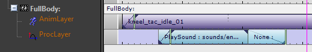
For PlaySound procedural clips the length of the blend-out period is ignored (the sound system defines its own blend out period), but the period is available to programmers that create procedural clips if needed.
For a list of the procedural clip types, see Procedural Clip Directory.
Moving Clips & Snapping
Clicking and dragging on a key allows you to move it along the timeline.
The default dragging behavior is to snap to the beginning, end time or blend time of keys (see the Clip Zones).
To snap the key to a time step on the timeline (whether it is seconds or frames), begin dragging the key as usual and then hold down the "Shift" key, this will now clip to the timeline markers and ignore the other keys.
Be aware that "Dragging+Shift" is different from "Shift+Dragging" which will clone a key.
To completely disable snapping behavior begin dragging and then hold down the "Ctrl" key. The key can now be dragged to any point on the timeline without snapping either to other keys or the timeline.
Copying a Fragment
To copy a fragment, drag and drop the fragment using the right mouse button.
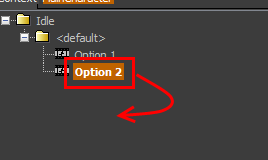
Alternatively you can also use the more familiar keyboard shortcuts CTRL+C and CTRL+V.
Deleting a Fragment
To delete a fragment, for example the one you just created by copying, use the Delete button while you have the fragment selected.
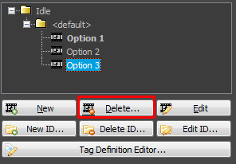
In the screenshot above note the difference between the selected item (Option 3) and the boldface item which is the one currently displayed in the Fragment Editor (Option 1). Pressing Delete will delete the selected item, in this case Option 3. In any case the action will ask for a confirmation so you can check the name before deleting.
File Manager: Saving & Perforce Integration
At any time you can save your changes with the Save Changes menu item:
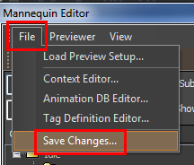
This will open up the Mannequin File Manager.
Here it lists all the files which were modified. You will notice that the changes you did affected more than one file and pressing Save would save all of them.
If you don't want to save a certain file you can select that file in question and press Undo Changes to Selected Files.

To be more correct: the file manager lists all files that look different in memory than on disk. So for example if somebody manually edits one of the Mannequin files (which is strongly discouraged though!) it is possible that the file will suddenly show up in the file manager. This can be very confusing but it also helps to detect subtle editing errors. Simply save the file again when this happens. This also means that, whenever you manually edit a mannequin file - maybe you merged the file in a version control system? - you have to open up the mannequin editor and load a preview file that uses it to verify your edit. Save without changing anything. If the file you edited shows up simply overwrite it.
If you have the Perforce plugin installed there is some (limited) Perforce integration.
- Read-only files are marked with a lock icon.
- You can check files out inside the file manager when needed. You are only allowed to save when all files are writable.
- Press refresh to update the file status (for example when you manually removed the read-only flag from a file).
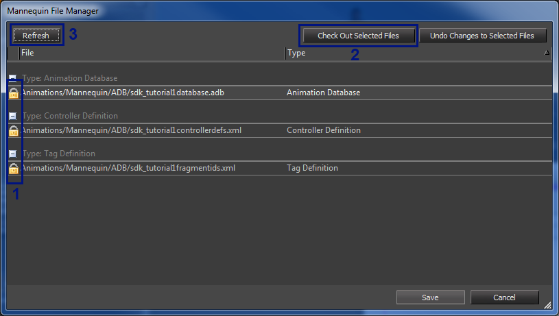
If you forget to save before closing the editor or when files change on disk outside of the editor you will still be reminded and the file manager will pop up.
To end this tutorial, simply press "Undo changes to Selected Files" 3 times (or select the files and press it once).
Where to go Next
Now you know how to create and edit fragments, you can continue with the second editor tutorial: Mannequin Editor Tutorial 2 - Tags & Previewing
Or you can read about the concepts we touched: the Preview Setup File (xxxPreview.xml), Fragments, FragmentIDs, Procedural Clips, etc.